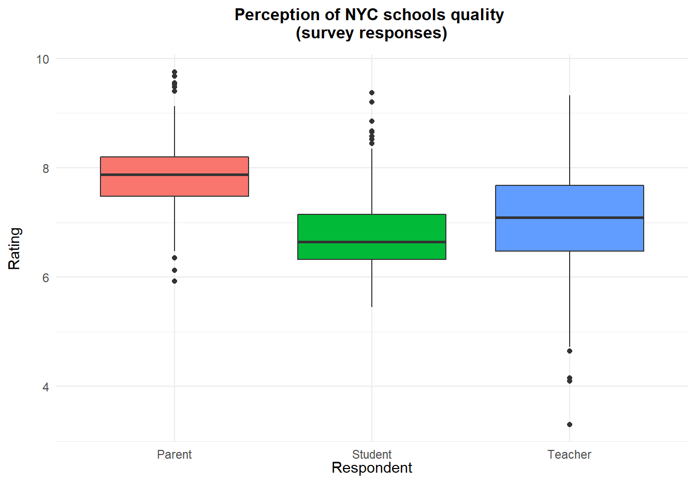
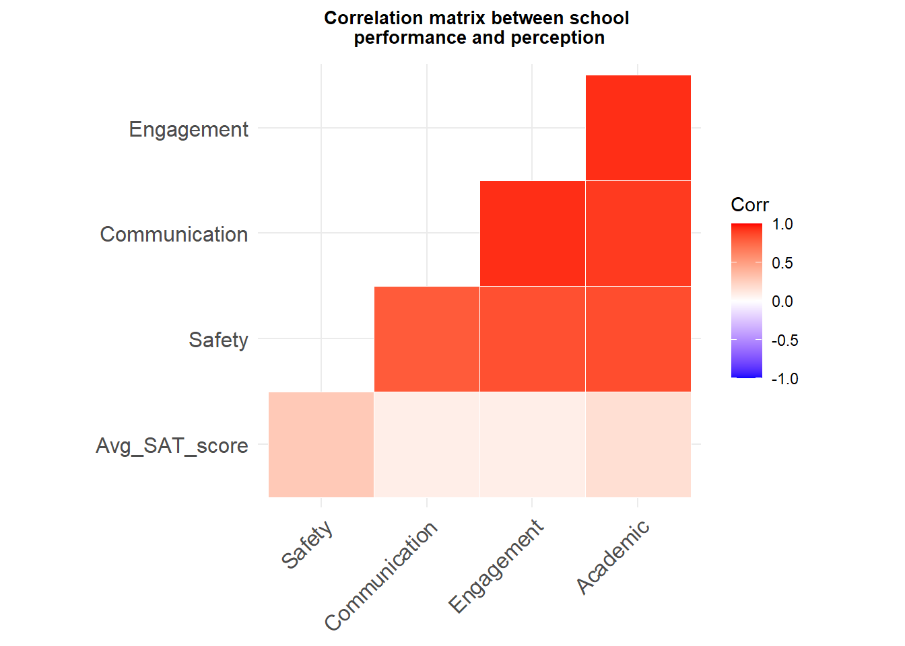

Schools
Academic performance 🎓 vs Public perception
This project looks into the academic performance of high schools in New York (2011) with additional demographic and socio-economic indicators. As i explore how performance was influenced with such indicators, i will also include a survey on the perceptions of students, teachers and parents on the quality of New York City schools.
I used data visualization to explore:
- What is the relationship between demography and school performance in NYC? Goal: Observe any differences in academic performance across NYC schools’ demographics.
- What is the relationship between perceptions on academic performance and surrounding factors such as demographics and success metrics of schools? Goal: Observe how perceptions vary across demographics and if these perceptions match actual school performances.
- Are there any similarities to how survey respondents perceive the quality of NYC schools? Goal: Observe any elements of echo chambers of opinions within groups and across groups
The survey data can be found here while the performance and demographics data can be found here.
Import and preview data
combined<-read_csv("data/combined.csv")
gened<-read_tsv("data/masterfile11_gened_final.txt")
spced<-read_tsv("data/masterfile11_d75_final.txt")Both gened dataframe (General education schools) and spced dataframe (Special education schools), have a key (dbn) that can be matched to the combined dataframe (performance and demographics).
Special attention to rename “dbn” to “DBN” so they can match. Also note that some variables such as “principal”, are not useful to this analysis. We shall drop such columns. Read the dataset dictionary for more information
The survey data is also granular, we would like to obtain aggregate perceptions of respondents for the schools in question.
The factors that respondents were surveyed on were:
- Safety and Respect
- Communication
- Engagement
- Academic Expectations
The surveyed groups were:
- Parents
- Teachers
- Students
- Total (The average of parent, teacher, and student scores)
Data cleaning and manipulation
#Filter to remain with high school and aggregate columns only
gened_clean<-gened%>%
rename(DBN=dbn)%>%
filter(schooltype=="High School")%>%
select(-2:-7,-33:-1942 )
spced_clean<-spced%>%
rename(DBN=dbn)%>%
filter(is.na(highschool))%>%
select(-2:-7, -33:-1773)
#Check missing values
colSums(is.na(gened_clean)) #Two missing student respondents
colSums(is.na(spced_clean)) #One missing student respondent
#Combine the dataframes
survey<-rbind(gened_clean,spced_clean)
combined<-combined%>%
right_join(survey, by="DBN") #right join so we only keep corresponding data that we can use to compareUsing right_join() helps keep all the survey data that corresponds to matching demographic and school performance data.
We analyze how perception relates to demographic and school performance via a correlation matrix.
Relationship Analysis
Disparity in performance between NYC Boroughs
While SATs have been questioned on their validity and reliability to accurately measure students, I believe they can be used as a metric to compare high schools.
#Analyze the disparity in performance between the Boroughs
combined_boro<-combined%>%
filter(!is.na(boro))
combined_boro_longer<-combined_boro%>%
pivot_longer(cols = c(asian_per, black_per, hispanic_per, white_per),
names_to="race",
values_to="percent")
#Plot Performance disparity between Boroughs
fig1<-combined_boro_longer%>%ggplot(aes(x=boro, y=avg_sat_score, fill=boro))+
geom_boxplot()+
theme_minimal()+
labs(title = "Average school performance by \nBorough in NYC (2011)",
y="Average SAT Score",
x="Borough",
fill="Borough")+
theme(plot.title = element_text(hjust = 0.5, size = 12, face="bold"),
legend.position="none")
Schools in the Bronx are averaging lower SAT scores as compared to schools in Manhattan or Staten Island. Not surprisingly, poverty rates are higher in the Bronx than Staten Island or Manhattan.
Overall, school performance in New York City is indeed split along the demographic backgrounds and socio-economic lines.

Trend of NYC school performance with racial diversity of schools
Pivot longer the dataset to ensure the diversity indicators are witin a single column and their values in a subsequent column. This will help during the plotting excercise.
#Pivot table longer to allow plotting of different races on the same plot
combined_race_longer<-combined%>%
pivot_longer(cols = c(asian_per, black_per, hispanic_per, white_per),
names_to="race",
values_to="percent")
combined_type_longer<-combined%>%
pivot_longer(cols = c(frl_percent, ell_percent, sped_percent),
names_to="Type of program",
values_to="percent")
#A correlation matrix for the variables we are interested in
cor_mat<-combined%>%
select(avg_sat_score,frl_percent, ell_percent, sped_percent,
ends_with("_per"))%>%
select(-female_per)%>%
cor(use = "pairwise.complete.obs")
colnames(cor_mat)<-c("Avg_SAT_score", "% food dis",
"% learning eng","% Sped",
"% Asian", "% Black", "% Hispanic", "% White",
"% male")
rownames(cor_mat)<-c("Avg_SAT_score", "% food dis",
"% learning eng","% Sped",
"% Asian", "% Black", "% Hispanic", "% White",
"% male")How racial diversity relates to school performance
Renaming of indicators to help improve the aesthetics of the chart.
#Relationship between school performance and their racial diversity
race.labs<-c("Asian", "Black", "Hispanic", "White")
names(race.labs)<-c("asian_per", "black_per", "hispanic_per",
"white_per")
fig2<-combined_race_longer%>%ggplot(aes(x=percent, y=avg_sat_score, color=race))+
geom_point()+
theme_minimal()+
labs(title="Relationship between SAT scores & \nracial composition of schools",
x= "Percentage composition",
y= "Average SAT score")+
scale_color_manual(
name="Race",
values = c("Darkorange", "DarkGreen", "DarkBlue", "Purple"),
labels=c("Asian", "Black", "Hispanic", "White")
)+
theme(plot.title = element_text(hjust = 0.5,face="bold", size=12,
margin = margin(t = 0, r = 0, b = 10, l = 0)),
axis.title.y = element_text(margin = margin(t = 0, r = 16,
b = 0, l = 0)),
axis.title.x = element_text(margin = margin(t = 15, r = 0,
b = 0, l = 0)),
legend.position="none")+
facet_wrap(~race, labeller = labeller(race=race.labs))
fig2<-ggplotly(fig2)
#This helps find out how plotly has listed the annotations
#str(fig2[['x']][['layout']][['annotations']])
#Locates the x position of the yaxis titles
#fig2[['x']][['layout']][['annotations']][[2]][['x']]
#fig2[['x']][['layout']][['annotations']][[1]][['y']]
#move the y-axis title more left and x-axis title lower
fig2[['x']][['layout']][['annotations']][[2]][['x']] <- -0.07
fig2[['x']][['layout']][['annotations']][[1]][['y']] <- -0.06
fig2 %>% layout(margin = list(l = 75, t=75))#api_create(fig2, filename = "Relationship between SAT scores and racial composition of schools in NYC")Schools with a higher proportion of Black and Hispanic have lower SAT scores as compared to schools with a higher share of White and Asian students.This could be due to the location, programs and resources at the disposal of schools.
Schools in boroughs like Staten Island and Manhattan would have more resources and have a higher proportion of White and Asian students as compared to schools in Bronx and Brooklyn.
How schools with special programs fair in academic performance
#Trend of SAT scores with the type of program available for students
prog.labs<-c("Learning to speak English", "Receiving lunch discount",
"Receiving specialized teaching")
names(prog.labs)<-c("ell_percent","frl_percent", "sped_percent")
fig3<-combined_type_longer%>%ggplot(aes(x=percent, y=avg_sat_score, color=`Type of program`))+
geom_point()+
theme_minimal()+
labs(title="Relationship between SAT scores and socio-economic factors",
x= "Percentage composition",
y= "Average SAT score")+
scale_color_manual(
name="Student",
values = c("maroon", "forestgreen", "chocolate"),
labels=c("Receiving lunch \ndiscount", "Learning to speak \nEnglish", "Receiving specialized \nteaching")
)+
theme(plot.title = element_text(hjust = 0.5, face="bold",
margin = margin(t = 0, r = 0, b = 10, l = 0)),
axis.title.y = element_text(margin = margin(t = 0, r = 5,
b = 0, l = 0)),
axis.title.x = element_text(margin = margin(t = 15, r = 0,
b = 0, l = 0)),
legend.position="none")+
facet_wrap(~`Type of program`, labeller = labeller(`Type of program`=prog.labs))
fig3<-ggplotly(fig3)
#This helps find out how plotly has listed the annotations
#str(fig3[['x']][['layout']][['annotations']])
#Locates the x position of the yaxis titles
#fig3[['x']][['layout']][['annotations']][[2]][['x']]
#fig3[['x']][['layout']][['annotations']][[1]][['y']]
#move the y-axis title more left and x-axis title lower
fig3[['x']][['layout']][['annotations']][[2]][['x']] <- -0.06
fig3[['x']][['layout']][['annotations']][[1]][['y']] <- -0.06
fig3 %>% layout(margin = list(l = 75, t=75))#api_create(fig3, filename = "Relationship between SAT scores and socio-economic factors")The most significant observation is how drastically school performance drops with increase in number of students eligible for lunch discount at a school. This is an indication of a school being in a socially and economically disadvantaged location. Such schools rarely have enough resources to help students perform better academically.
An increase in the share of students learning to speak English is also related to lower academic performance for the school. Learning to speak English can be an indicator of share of students with a lower economic migrant background.
Creating an arbitrary cut-off of 30%, i looked into the share of schools in each borough with at least a third of its students eligible or participating in the special programs. Again, Staten Island had the fewest schools with students taking up special programs while the Bronx had the most. This matches with the socio-economic profiles of the respective boroughs.
This gap also translates to average SAT scores as shown in an earlier chart between the boroughs.
p.mat<-cor_pmat(cor_mat)#pvalues
cor_tib<-cor_mat%>%
as_tibble(rownames="variable")#A tibble for easier viewing
#Variables with strong relationship with Avg sat score
strong_cor<-cor_tib%>%
select(variable, Avg_SAT_score)%>%
filter(Avg_SAT_score < -0.25|Avg_SAT_score >0.25)
strong_cor_mat<-as.matrix(strong_cor)
#Plot matrix table to see strength of relationships
fig5 <- ggcorrplot(
cor_mat, hc.order = TRUE, type = "lower", title = "Correlation matrix between school \nperformance and demographics", outline.col = "white", p.mat = p.mat)+
theme(plot.title = element_text(size=12, face="bold", hjust = 0.5))A correlation analysis shows how strong the relationships between racial diversity and school programs are with the academic performance of the school.
When it comes to demographics, academic performance shows a strong positive correlation with the percentage of white students in a school (r= 0.65). While it has the strongest negative relationship with the percentage of students that are eligible for food discount at a school (r= -0.72).
How teachers, students and parents rate NYC schools
#establish average scores per respondent group
survey_score<-combined%>%
mutate(parent_score_avg=(saf_p_11+com_p_11+eng_p_11+aca_p_11)/4)%>%
mutate(teacher_score_avg=(saf_t_11+com_t_11+eng_t_11+aca_t_11)/4)%>%
mutate(student_score_avg=(saf_s_11+com_s_11+eng_s_11+aca_s_11)/4)
#Pivot table longer to make it easier to plot on same scatter plot
survey_score_longer<-survey_score%>%
pivot_longer(cols = c(parent_score_avg, teacher_score_avg, student_score_avg),
names_to= "respondent",
values_to= "avg_score")
#Plot the spread of the respondents average scores
fig6<-survey_score_longer%>%ggplot(aes(x=respondent, y=avg_score, fill=respondent))+
geom_boxplot(show.legend = FALSE)+
theme_minimal()+
scale_x_discrete(labels=c("parent_score_avg" = "Parent", "student_score_avg" = "Student","teacher_score_avg" = "Teacher"))+
labs(title = "Perception of NYC schools quality \n(survey responses)",
y="Rating",
x="Respondent")+
theme(plot.title = element_text(hjust = 0.5, size=12, face="bold",
margin = margin(t = 0, r = 0, b = 10, l = 0)),
axis.title.y = element_text(margin = margin(t = 0, r = 10,
b = 0, l = 0)),
axis.title.x = element_text(margin = margin(t = 0, r = 0,
b = 10, l = 0)),
legend.position="none")
#fig6<-ggplotly(fig6)#%>%config(responsive=TRUE, displayModeBar = FALSE)
#api_create(fig6, filename = "Perception of NYC schools quality (survey responses)")
fig6
Overall, parents seem to rate NYC schools the highest while students (not surprisingly 😄) are rating the schools lowest. Teachers show the most broad rating of NYC schools.
Ratings on school performance across the four benchmarks are really close for each respondent. 50% of the parents, for example, rate schools between 7.47 and 8.20, a difference of just 0.72. This is an indication of how similar the perceptions of individual groups are amongst themselves.
Survey responses on quality of NYC schools
#Pivot table longer to establish individual rating per question type
que_score<-combined%>%
pivot_longer(cols = c(saf_p_11:aca_s_11),
names_to="questions",
values_to="Rating")
#Create variables out of the pivoted column
que_score <- que_score %>%
mutate(respondent = str_sub(questions, 4, 6)) %>%
mutate(question = str_sub(questions, 1, 3))
que_score <- que_score%>%
mutate(respondent = ifelse(respondent == "_p_", "parent",
ifelse(respondent == "_t_", "teacher",
ifelse(respondent == "_s_", "student",
ifelse(respondent == "_to", "total", "NA")))))
#Boxplot to see if there appear to be differences in how the three groups of responders (parents, students, and teachers) answered the four questions.
que_score<-as.data.frame(que_score)
fig7<-plot_ly(data = que_score, x=~question, y =~Rating, color =~respondent,
type = "box") %>%
layout(boxmode = "group", title="<b>NYC School quality perception survey questions and responses<b>",
xaxis = list(title='survey questions',
ticktext = list("Academic \nExpectations", "Communication", "Engagement", "Safety and \nRespect"),
tickvals = list("aca","com","eng","saf"),
yaxis = list(title='Percentage')))#%>%config(responsive=TRUE, displayModeBar = FALSE)
#api_create(fig7, filename = "NYC School quality perception survey questions and responses")
fig7Looking on how individual groups responded, the best rating was for safety and respect by parent respondents and the lowest was for communication by student respondents.
Interesting to note that across each borough, the responses to the survey were somewhat similar. The box plot below shows how even the worst academically performing borough (Bronx) has half the respondents rating schools at a score of 7.17 while Staten Island, which is better off academically and economically has half the respondents scoring their schools at 7.30 rating.

This proves what we saw in the correlation matrix, that how respondents rated schools do not have a strong correlation nor a statistically significant one with actual school performance. But how respondents rated schools do closely correlate to each other.
This could mean there is a perception bubble among teachers, students and parents. Sadly, it does not match reality. Actual school performance is not influencing how parents, students, and teachers actually perceive the quality of schools in their neighborhoods. Rather, it seems school quality rating is similar within the individual groups, an information bubble of parents, students, and teachers, individually.
Perceptions are a funny thing.
“Humans see what they want to see.”